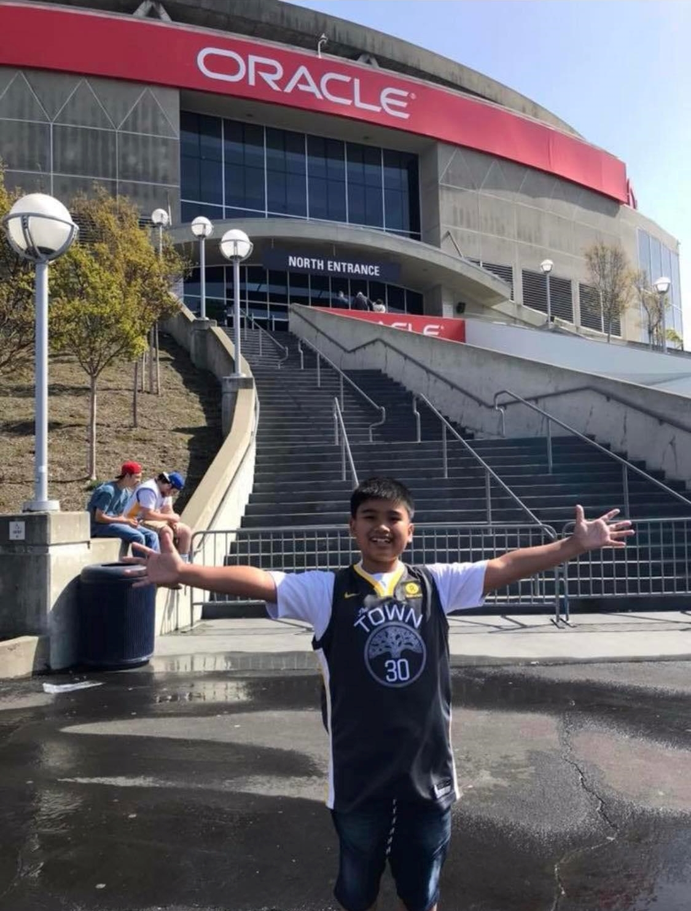

Basketballweb || Website about basketball for you.
Romeo Laurence U. Saldivar III is the author of this website. Romeo Laurence was born on July 28, 2008. He is from Villasis, Pangasinan, Philippines and currently studying at Philippine Science High School-Central Luzon Campus. Since his childhood, he has loved watching basketball because it is exciting and thrilling. It also makes all of your body move, making you exercise more. His love for this sport became more active when his team in the NBA, the Golden State Warriors , won the championship in the 2014-2015 NBA season beating the Cleveland Cavaliers with 4 wins and 2 loses.
The picture above is a picture of me back in April 2018 went we went to watch a match between the Golden State Warriors and New Orleans Pelicans at the Oracle Arena in Oakland, California, USA, more than a year before the Golden State Warriors move their arena to Chase Center in San Francisco, California, USA . This was an unforgettable and unbelievable experience for him.
On this magazine website, the target audience is basketball fanatics, but probably not LeBron fans. There are videos here about the sport, articles that may catch your attention, and others.